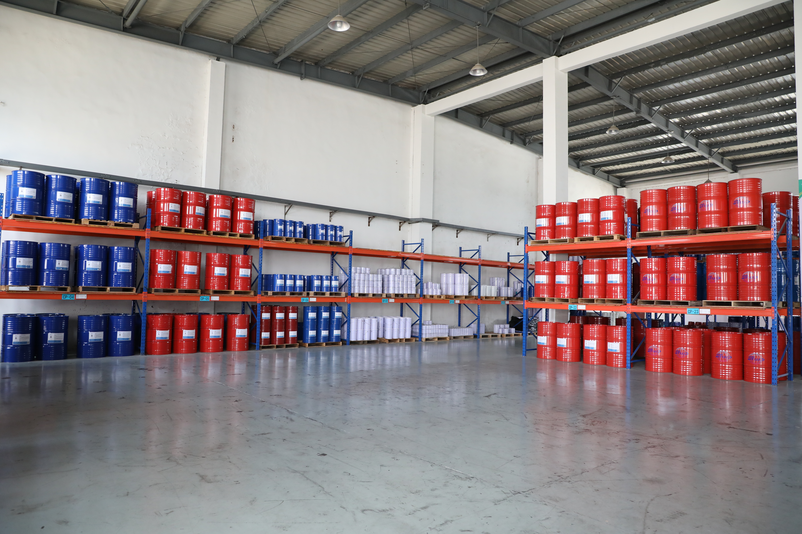

KEY PRODUCTS
프라이머부터 폴리우레아, 탑코트까지 현장의 조건과 목적에 완벽하게 부합하는
체계적인 3단계 코팅 시스템을 제공합니다.
프로젝트 맞춤형 코팅 시스템 제원표
| Code | 카테고리 | 적용 | 기능 | 종류 | Mix 기준 | Mix 비율 |
시공 용량 (kg/m²) |
시공 면적 (m²/kg) |
|---|---|---|---|---|---|---|---|---|
| 8008 | 프라이머 | 메탈 | 전처리 | 2액형 | 무게 | 1:1 | 0.125 | 8 |
| 8009 | 프라이머 | 콘크리트 | 전처리 | 2액형 | 부피 | 1.5:1 | 0.16 | 6.25 |
| 900 | 폴리우레아 | 범용 | 방수 | 2액형 | 부피 | 1:1 | 1.08 | 0.93 |
| 951 | 폴리우레아 | 범용 | 방수 | 2액형 | 부피 | 1:1 | 1.08 | 0.93 |
| 562 | 폴리우레아 | 범용 | 방수 | 2액형 | 부피 | 1:1 | 1.08 | 0.93 |
| 9527 | 탑코트 | 범용 | 방수, 보수 | 2액형 | 무게 | 1:4 | 0.70 | 1.43 |
| 9528 | 탑코트 | 콘크리트 | 방수, 보수 | 1액형 | - | - | 0.75 | 1.33 |
| 8027 | 탑코트 | 콘크리트 | 자외선 | 2액형 | 무게 | 1:1 | 0.16 | 6.25 |
| 8028 | 탑코트 | 메탈 | 자외선, 녹방지 | 2액형 | 무게 | 1:2 | 0.16 | 6.25 |
| 8029 | 탑코트 | 범용 | 자외선, 방수 | 2액형 | 무게 | 1:1 | 0.16 | 6.25 |